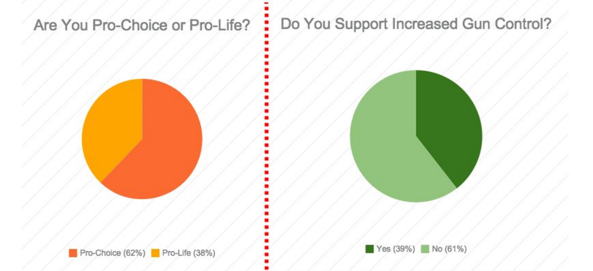
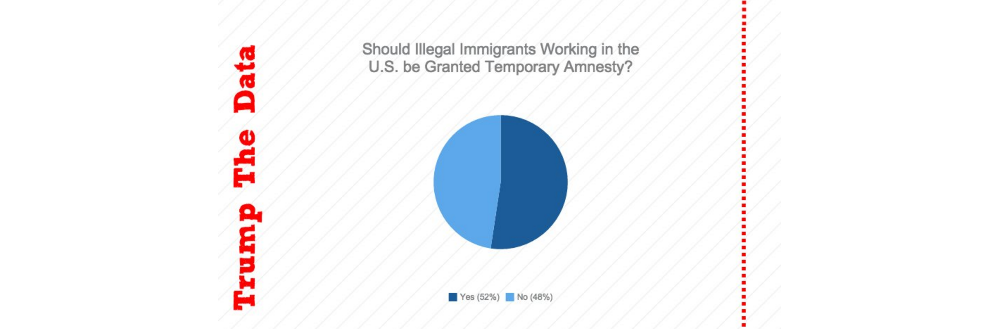

WESTERN POPULAR OPINION
Our twitter data and poll research shows that western states do not support gun control, and are split about immigration.
For the purposes of this site, we define the West of the United States as Arizona, California, Colorado, Idaho, Montana, Nevada, New Mexico, Oregon, Utah, Washington, and Wyoming. The area as whole is extremely politically diverse with the coastal states of California, Oregon, and Washington expressing views that align with the democratic party in Presidential elections and the others aligning with the republicans. However, when we break it down issue by issue interesting patterns start to emerge.
With the issue of gun control, most Western states do not support increased regulation. In fact, with the exception of California, Oregon and Washington, Western states take a dramatic position on the issue. While the nations opinions seem to split down the middle, leaning slightly to the side of not increasing regulation, the West paints a vastly different picture. The states of Idaho, Montana, and Wyoming boast a 70% disapproval rate, starkly different from the national average. Even the approving states unusually aren’t that far from the national average, suggesting that on the issue of gun control the West may favor deregulation more than the rest of the country.
On the issue of immigration, the area is split almost down the middle. In answer to the question “Do you support stronger measures to increase our border security”, 69% of the country said yes. In contrast to the issue of gun control, the area stayed within the area of the national average, with the exception of Oregon who disapproved of increasing security more strongly than the average. An interesting trend to note is that with the exception of Arizona, all Western states that lay along the Mexican border do not support stronger security measures.
The issue of abortion is one of the most morally divisive political topics. Nationally, 63% of those polled were pro choice and 37% were pro life. The West, which is the center of the Mormon religion tends to be more pro life than the rest of the country. While most states are considered pro choice, they are less enthusiastic than the rest of the nation. The states that do stand out are Utah and Wyoming, whose population polled as majority pro life. However, based off the fact that 70% of the Utah population considers themselves part of the Mormon faith, this comes as little surprise.